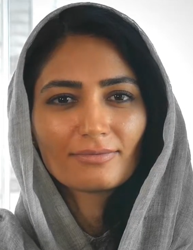
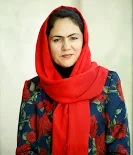
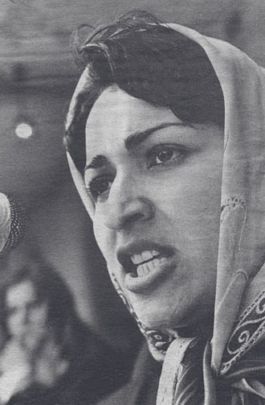
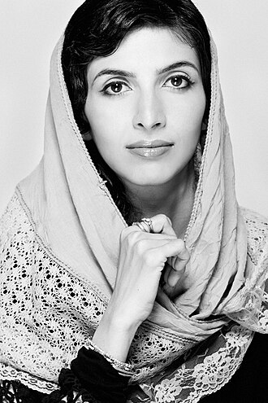
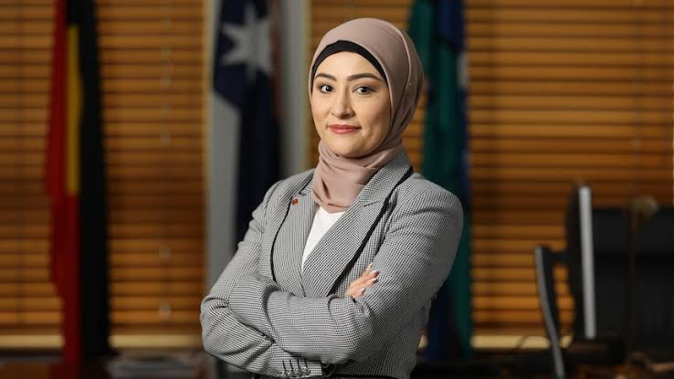

- HERE! we see images of inspirational Afghan women that mentioned in the about section

Fereshteh Forough (born 1985) is an Afghan social activist and the CEO and founder of Code to Inspire (CTI), the first coding school for girls in Afghanistan.

Fawzia Koofi is an Afghan politician, writer, and women's rights activist.

Meena was an Afghan revolutionary political activist, women's rights activist and founder of Revolutionary Association of the Women of Afghanistan (RAWA).

Roya Mahboob is an Afghan businesswoman. She founded and is CEO of the Afghan Citadel Software Company, a full-service software development company based in Herat, Afghanistan.

Fatima Payman is an Afghan-Australian politician who has served as a senator for Western Australia since 2022, first for the Labor Party and then as an independent, before launching her own political party − Australia's Voice − in October 2024.